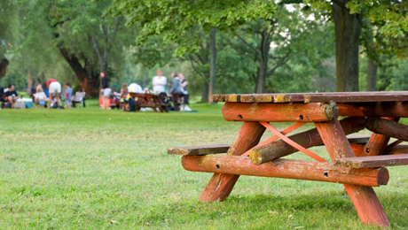

LOST FOREST
A zipline, ropes courses, the Breathtaker Alpine Coaster, miles of hiking trails, a high-mountain fishing pond, disc golf, and a climbing wall—welcome to Lost Forest, a dynamic, mid-mountain playground for adventurers of any age.
Today's program:
- 8h00am : hiking trails
- 10h00am : High Mountain fishing pond
- 13h00pm : Disc Golf
- 15h00pm : Zipline,ropes course
WHERE WILL YOU FIND IT?
The Lost Forest is next to Northen Frontier.